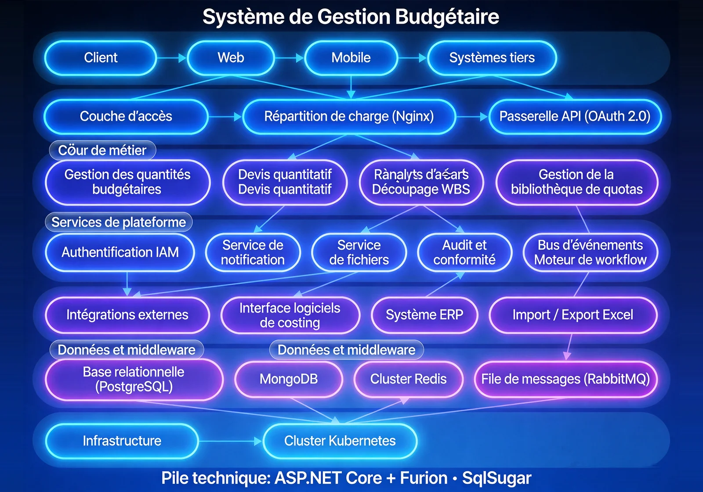

Le Système de Gestion du Budget d'Ingénierie est une plateforme de gestion des quantités à cycle complet. Face aux processus multi-étapes, à la faible efficacité et aux erreurs élevées de la gestion traditionnelle, le système offre la gestion complète de la compilation à l'analyse dépassement/économie et aux alertes de déviation, aidant à saisir précisément la dynamique d'exécution budgétaire et à détecter rapidement les écarts.

Caractéristiques Clés
Le système couvre compilation, listes, rapports sous-items, rapports matériaux, calepinage et analyse dépassement/économie — six modules.
Compilation Budgétaire
Importer la structure de sous-items du projet, compiler les quantités aux nœuds terminaux, avec brouillon, publication et mise à jour itérative.
Liste Budgétaire
Calcul automatique de la consommation attendue selon l'avancement, comparaison avec la consommation réelle et signalement des économies/dépassements.
Rapports Sous-Items
Agrégation automatique des quantités attendues et réelles par sous-item selon la version de référence, génération de rapports comparatifs.
Rapports Matériaux
Agrégation de la consommation matériaux, comparaison mensuelle réel vs budget.
Calepinage
Calcul et optimisation de la coupe d'armature depuis les plans, génération des bons de coupe et listes matériaux.
Analyse Dépassement/Économie
Agrégation automatique des quantités attendues et réelles par sous-item selon la version de référence, génération de rapports d'analyse pour identifier précisément les écarts.
Architecture du Système
Architecture du Système

Architecture cycle complet + moteurs de calcul : les modèles BIM sont extraits par le moteur d'auto-quantité, intégrés aux listes et bibliothèques de normes de coût pour l'estimation. La couche moteur indépendante couvre quatre moteurs (calcul de quantité, application de barème, taux multi-devises, auto-quantité BIM), supportant la conversion automatique NGN/USD/RMB.
Scénarios d'Application
Adapté à la compilation budgétaire, à l'analyse comparée de consommation, à l'analyse dépassement/économie et au calepinage d'armatures.

Compilation Budgétaire
Importer la structure de sous-items, compiler les quantités aux nœuds terminaux, avec brouillon, publication et mise à jour itérative.

Analyse Comparée Consommation
Calcul automatique de la consommation attendue, comparaison avec le réel et signalement des écarts.

Analyse Dépassement/Économie
Agrégation automatique par sous-item selon la version de référence, génération de rapports d'analyse.

Calepinage Optimisé
Calcul et optimisation de la coupe d'armature depuis les plans, réduction des pertes.
Avantages et garantie
Base de cotations sectorielles
Base de cotations couramment utilisée dans le secteur du bâtiment et base de prix des matériaux préinstallées, prêtes à l’emploi, permettant de lancer rapidement la gestion des quantités budgétées du projet.
Gestion parallèle de plusieurs projets
Prend en charge la gestion parallèle de plusieurs projets, avec un mode de contrôle à deux niveaux (groupe et projet), et une agrégation hiérarchisée des données de quantités budgétées.
Prise en charge de taux de change multi-devises
Prend en charge la conversion automatique entre naira, dollar américain et yuan chinois. La couche de moteur de calcul indépendante intègre un moteur de taux de change multi-devises, pour une comptabilité indépendante par projet.
Calcul quantitatif automatique BIM
Les quantités de travaux sont extraites du modèle BIM par le moteur de calcul quantitatif automatique, améliorant l’efficacité du calcul et la cohérence des données.
Analyse des écarts entre consommation réelle et budget
La comparaison entre les données réelles et le budget génère un rapport d’analyse des écarts entre consommation réelle et budget, les écarts de coût sont clairement visibles, pour soutenir les décisions de gestion.
Boucle fermée de gestion des quantités budgétées
Couvre l’ensemble du processus : élaboration du budget, ajustement, approbation, suivi de l’exécution. Les données de quantités budgétées sont interconnectées avec les systèmes d’approvisionnement et de gestion des matériaux.
Étude des besoins
Nous étudions en profondeur le processus de gestion budgétaire du projet et les normes de calcul des coûts, et structurons les règles d’élaboration des quantités budgétées et les nœuds d’approbation.
Déploiement du système
Prend en charge le déploiement local et le déploiement sur cloud, s’adaptant aux besoins de gestion des quantités budgétées de projets de différentes tailles.
Formation et mise en ligne
Nous proposons une formation différenciée pour les administrateurs, les prévisionnistes et la direction du projet, couvrant l’élaboration du budget, les ajustements et l’utilisation des rapports d’analyse des écarts entre consommation réelle et budget.
Maintenance continue
Support technique distant 7j/7 et 24h/24, inspections régulières du système et itérations fonctionnelles, mise à jour continue de la base de cotations et des données de prix.
Sécurité des données
Stockage chiffré des données de quantités budgétées, gestion des autorisations par niveaux, enregistrement complet des journaux d’opérations, prenant en charge l’audit et la traçabilité.
Mise à niveau et extension
Prend en charge l’importation de nouvelles bases de cotations et la configuration de nouveaux modèles de rapports, étendant les dimensions de gestion des quantités budgétées selon les besoins de l’entreprise.